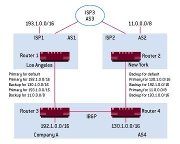

Классификация сетей.
Сети компьютеров имеют множество преимуществ перед совокупностью отдельных систем, в их числе следующие:
✓ Разделение ресурсов. Пользователи сети могут иметь доступ копределенным ресурсам всех узлов сети. В их числе, например, наборы данных, свободная память на удаленных узлах, вычислительная мощность удаленных процессоров и т. д. Это позволяет экономить значительные средства за счет оптимизации использования ресурсов и их динамического перераспределения в процессе работы.
✓ Повышение надежности функционирования системы. Посколькусеть состоит из совокупности отдельных узлов, то в случае сбоя на одном или нескольких узлах другие узлы смогут взять на себя их функции. При этом пользователи могут даже и не заметить этого– перераспределение задач возьмет на себя программное обеспечение сети.
✓ Распределение загрузки. В сетях с переменным уровнем загруженности имеется возможность перераспределять задачи с одних узлов сети (с повышенной нагрузкой) на другие, где имеются свободные ресурсы. Такое перераспределение может производиться динамически в процессе работы, более того, пользователи могут даже и не знать об особенностях планирования задач в сети. Эти функции может брать на себя программное обеспечение сети.
Равномерное распределение загрузки можно обеспечить путем специальной настройки маршрутизаторов на объявление и прием информации об определенных маршрутах.
Для распределения нагрузки и обеспечения отказоустойчивости в многодомной конфигурации, имеющей резервные подключения к различным провайдерам используются те же методы, что и при многодомной конфигурации с единственным провайдером. Следует, однако, помнить, что атрибут MED используется только в тех случаях, когда AS имеет множественные связи с другой AS (т. к. действие MED не является транзитивным). Поэтому если к каждому провайдеру имеется только по одному соединению, атрибут MED задействовать нельзя (такая конфигурация показана на рисунке 1 для компании А).

Рис. 1 Пример многодомной конфигурации
Вместо этого администратор для объявления маршрута может воспользоваться атрибутом AS-PATH. Например, чтобы установить AS1 как резервное соединение для 130.1.0.0/16, администратор может создать фиктивное значение AS-PATH, увеличив нормальное значение атрибута (4) на 4. Когда Router 3 объявляет 130.1.0.0/16 со значением атрибута AS-PATH равным 4 для AS1, система AS1 будет объявлять для AS3 маршрут с атрибутом 1 4 4. Маршрутизатор Router 4 рекламирует 130.1.0.0/16 для AS2 с нормальным значением 4, а AS2 рекламирует для AS3 этот адрес со значением AS-PATH 2 4. Таким образом, AS3 будет выбирать для трафика 130.1.0.0/16 маршрут через AS2 как наиболее короткий.
При подключении к нескольким различным провайдерам следует заблокировать все маршруты, кроме необходимых для связи с провайдером и тех, которые будут использоваться внутри AS. В противном случае провайдеры смогут обнаружить короткий путь через AS и сеть компании станет транзитным путем для трафика между провайдерами.
✓ Расширяемость.
Сеть может быть легко расширена за счет добавления новых узлов. При этом архитектура практически всех сетей позволяет легко адаптировать сетевое программное обеспечение к изменениям конфигурации. Более того, это может производиться автоматически.
Однако с точки зрения безопасности эти достоинства превращаются в уязвимые места, порождая серьезные проблемы.
Особенности работы в сети определяются ее двойственным характером: с одной стороны, сеть следует рассматривать как единую систему, а с другой, – как совокупность независимых систем, каждая из которых выполняет свои функции; имеет своих пользователей. Эта же двойственность проявляется в логическом и физическом восприятии сети: на физическом уровне взаимодействие отдельных узлов осуществляется с помощью сообщений различного вида и формата, которые интерпретируются протоколами. На логическом уровне (т. е. сточки зрения протоколов верхних уровней) сеть представляется как совокупность функций, распределенных по различным узлам, но связанных в единый комплекс.
Сети подразделяются:
1 По топологии сети (классификация по организации физического уровня).
✓ Общая шина.
Все узлы соединены с общей высокоскоростной шиной передачи данных. Они одновременно настроены на прием сообщения, но каждый узел может принять только то сообщение, которое предназначено ему. Адрес идентифицируется контроллером сети, при этом в сети может быть только один узел с заданным адресом. Если два узла одновременно заняты передачей сообщения (столкновение пакетов), то один из них или они оба ее прекращают, ожидают случайный интервал времени, затем возобновляют попытку передачи (метод разрешения конфликтов). Возможен другой случай – в момент передачи каким-либо узлом сообщения по сети, другие узлы начать передачу не могут (метод предотвращения конфликтов). Такая топология сети является очень удобной: все узлы являются равноправными, логическое расстояние между любыми двумя узлами равно 1, скорость передачи сообщений велика. Впервые организация сети «общая шина» и соответствующие протоколы нижних уровней были разработаны совместно компаниями DIGITAL и Rank Xerox, она получила название Ethernet.
✓ Кольцо.
Сеть построена в виде замкнутого контура однонаправленных каналов между станциями. Каждая станция принимает сообщения по входному каналу, в начале сообщения содержится адресная и управляющая информация. На основании ее станция принимает решение сделать копию сообщения и убрать его из кольца либо передать по выходному каналу на соседний узел. Если в настоящий момент не передается никакого сообщения, станция сама может передать сообщение.
В кольцевых сетях используется несколько различных способов управления:
– гирляндная – управляющая информация передается по отдельным совокупностям (цепям) компьютеров кольца;
– управляющий маркер – управляющая информация оформляется ввиде определенного битового шаблона, циркулирующего по кольцу; только при получении маркера станция может выдать сообщение в сеть (наиболее известный способ, получивший название token ring);
– сегментная – по кольцу циркулирует последовательность сегментов. Обнаружив пустой, станция может поместить в него сообщение и передать в сеть;
– вставка регистров – сообщение загружается в регистр сдвига ипередается в сеть когда кольцо свободно.
✓ Звезда.
Сеть состоит из одного узла-концентратора и нескольких соединенных с ним терминальных узлов, непосредственно между собой несвязанных. Один или несколько терминальных узлов могут являться концентраторами другой сети, в этом случае сеть приобретает древовидную топологию.
Управление сетью полностью осуществляется концентратором; терминальные узлы могут связываться между собой только через него. Обычно на терминальных узлах выполняется лишь локальная обработка данных. Обработка данных, имеющих отношение ко всей сети, осуществляется на концентраторе. Она носит название централизованной. Управление сетью обычно осуществляется с помощью процедуры опроса: концентратор через определенные промежутки времени опрашивает по очереди терминальные станции – есть ли для него сообщение. Если есть – терминальная станция передает сообщение на концентратор, если нет – осуществляется опрос следующей станции. Концентратор может передать сообщение одному или нескольким терминальным станциям в любой момент времени.
2. По размерам сети:
✓ Локальные. Сеть передачи данных, связывающая ряд узлов в одной локальной зоне (комната, организация); обычно узлы сети комплектуются однотипным аппаратным и программным обеспечением (хотя это и необязательно). Локальные сети обеспечивают высокие скорости передачи информации. Локальные сети характеризуются короткими (не более нескольких километров) линиями связи, контролируемой рабочей средой, низкой вероятностью ошибок, упрощенными протоколами. Для связи локальных сетей с территориальными используются шлюзы.
✓ Территориальные. Отличаются от локальных большей протяженностью линий связи (город, область, страна, группа стран), которые могут обеспечиваться телекоммуникационными компаниями. Территориальная сеть может связывать несколько локальных сетей, отдельные удаленные терминалы и ЭВМ и может быть соединена с другими территориальными сетями.
Территориальные сети редко используют какие-либо типовые топологические конструкции, так как они предназначены для выполнения других, обычно специфических задач. Поэтому они как правило строятся в соответствии с произвольной топологией, управление осуществляется с помощью специфических протоколов.
3. По организации обработки информации (классификация на логическом уровне представления; здесь под системой понимается вся сеть как единый комплекс):
✓ Централизованная.
Системы такой организации наиболее широко распространены и привычны. Они состоят из центрального узла, реализующего весь комплекс выполняемых системой функций, и терминалов, роль которых сводится к частичному вводу и выводу информации. В основном периферийные устройства играют роль терминалов, с которых осуществляется управление процессом обработки информации. Роль терминалов могут выполнять дисплейные станции или персональные компьютеры, как локальные, так и удаленные. Любая обработка (в том числе связь с другими сетями) выполняется через центральный узел.
Особенностью таких систем является высокая нагрузка на центральный узел, в силу чего там должен быть высоконадежный и высокопроизводительный компьютер. Центральный узел является наиболее уязвимой частью системы: выход его из строя выводит из строя всю сеть. В тоже время задачи обеспечения безопасности в централизованных системах решаются наиболее просто и фактически сводятся к защите центрального узла.
Другой особенностью таких систем является неэффективное использование ресурсов центрального узла, а также неспособность гибкой перестройки характера работы (центральный компьютер должен работать все время, а значит какую-то его часть он может работать вхолостую). В настоящее время доля систем с централизованным управлением постепенно падает.
✓ Распределенная.
Практически все узлы этой системы могут выполнять сходные функции, причем каждый отдельный узел может использовать оборудование и программное обеспечение других узлов. Основной частью такой системы является распределенная ОС, которая распределяет объекты системы: файлы, процессы (или задачи), сегменты памяти, другие ресурсы. Но при этом ОС может распределять не все ресурсы или задачи, а только часть их, например, файлы и свободную память на диске. В этом случае система все равно считается распределенной, количество ее объектов (функций, которые могут быть распределены по отдельным узлам) называется степенью распределенности. Такие системы могут быть как локальными, так и территориальными. Говоря математическим языком, основной функцией распределенной системы является отображение отдельных задач во множество узлов, на которых происходит их выполнение. Распределенная система должна обладать следующими свойствами:
1. Прозрачностью, то есть система должна обеспечить обработкуинформации вне зависимости от ее местонахождения.
2. Механизмом распределения ресурсов, который должен выполнять следующие функции: обеспечивать взаимодействие процессов и удаленный вызов задач, поддерживать виртуальные каналы, распределенные транзакции и службу имен.
3. Службой имен, единой для всей системы, включая поддержкуединой службы директорий.
4. Реализацией служб гомогенных и гетерогенных сетей.
5. Контролем функционирования параллельных процессов.
6. Безопасностью. В распределенных системах проблема безопасности переходит на качественно новый уровень, поскольку приходится контролировать ресурсы и процессы всей системы в целом, а также передачу информации между элементами системы. Основные составляющие защиты остаются теми же – контроль доступа и информационных потоков, контроль трафика сети, аутентификация, операторский контроль и управление защитой. Однако контроль в этом случае усложняется.
Вывод:
В настоящее время существуют два аспекта, выделяющих банки из круга остальных коммерческих систем:
1. Информация в банковских системах представляет собой «живыеденьги», которые можно получить, передать, истратить, вложить и т. д.
2. Она затрагивает интересы большого количества организаций иотдельных лиц.
Поэтому информационная безопасность банка – критически важное условие его существования.
В силу этих обстоятельств, к банковским системам предъявляются повышенные требования относительно безопасности хранения и обработки информации. Отечественные банки также не смогут избежать участи тотальной автоматизации по следующим причинам:
– усиления конкуренции между банками;
– необходимости сокращения времени на производство расчетов;– необходимости улучшать сервис.
Автоматизация и компьютеризация банковской деятельности (и денежного обращения в целом) продолжает возрастать. Основные изменения в банковской индустрии за последние десятилетия связаны именно с развитием информационных технологий. Можно прогнозировать дальнейшее снижение оборота наличных денег и постепенный переход на безналичные расчеты с использованием пластиковых карт, сети Интернет и удаленных терминалов управления счетом юридических лиц.
В связи с этим следует ожидать дальнейшее динамичное развитие средств информационной безопасности банков, поскольку их значение постоянно возрастает.